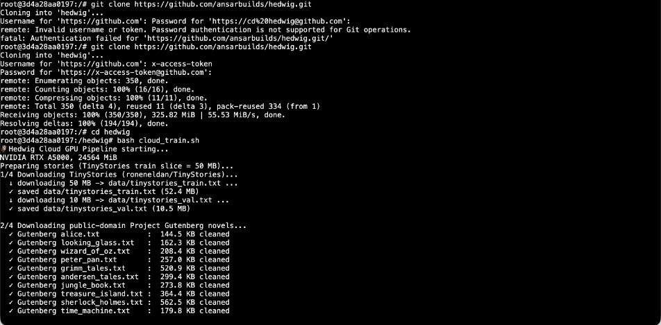
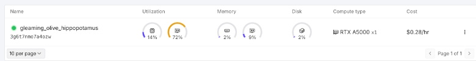
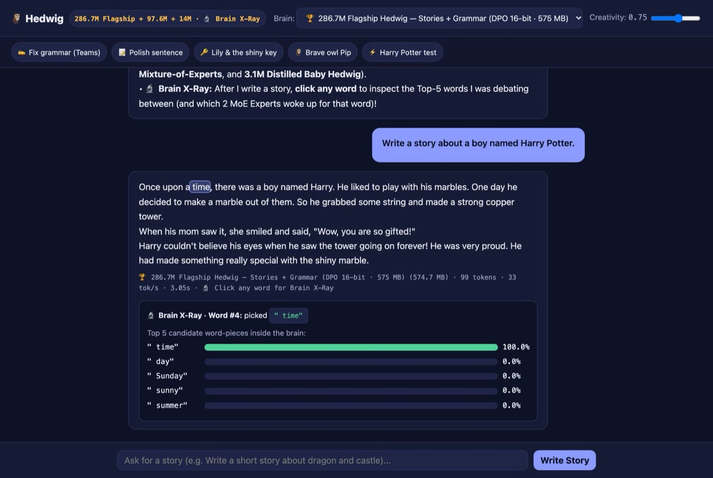

It runs here.
On your device.
No server and no API key. Your browser downloads the brain once, then does every bit of the maths itself in plain JavaScript I wrote by hand. Nothing you type leaves this page. Click any word when it finishes to see the five pieces Hedwig was choosing between.
Wake Hedwig up.
Loads a 14 MB brain into this tab. After that it writes at about 90 pieces a second on an M-series Mac, slower on phones.
Or open it on its own page at Hugging Face Spaces.
Small on purpose.
Honest about it.
A knob is one number inside the model. Turn it one way and "key" gets more likely; turn it the other and "x" does. Hedwig has millions of them. The models people use every day have billions.
Bars are to scale against 300M knobs. GPT-3's bar would need to be about 580 times wider than this track.
What it read
Children's stories (TinyStories), educational web pages (FineWeb-Edu), and 10 public-domain novels from Project Gutenberg, from Alice in Wonderland to The Time Machine. Plus 30,000 grammar edits from Grammarly's Apache-2.0 CoEdIT set. Every source is public domain or openly licensed, and no other AI model's outputs were used.
What it can do
Write a short children's story from a request, keep a name like Harry Potter through a whole story (the bigger brains), and switch into one-sentence grammar fixes when asked to "Fix grammar:". It also stops when the story ends instead of rambling into a second one.
From one letter
at a time to three brains.
Every step below changed one thing and wrote the score down before and after. Lower loss means the model is less surprised by text it has never seen.
A model that guesses one letter at a time
4.8M knobs, 65 symbols, 1.1 MB of plays. 16 minutes on the M4.
loss 4.388 → 1.483Notes for every concept, a roadmap, and a budget before any money was spent.
docs/LEARNINGS.mdSave points and my own tokenizer
Stopped on purpose at step 750 with Ctrl+C, picked up where it left off.
resumed at 1.622 → 1.481Glues common letter pairs into pieces, so the model reads words instead of letters.
text 1.96× shorterThe best score came at step 750, then got worse as it memorised the book.
3.007 → 3.429The modern stack, then all three ChatGPT stages
The same building blocks as Llama, added one at a time and measured each time.
RoPE reached the floor 1/3 fasterA 13.8M storyteller, about an hour on the Mac.
val 8.501 → 2.08013,852 request → story pairs. Graded only on Hedwig's reply.
1.76627.8 MB down to 7.9 MB, and a local chat page.
7.05× smallerLiked vs disliked stories. Caught it cheating, then fixed it.
win-rate 0% → 91.7%The lab week, on a laptop, for $0
Remember past words instead of re-reading them.
47 → 89 pieces/s8 experts with 2 awake per word; a 3.4M "baby" taught by the 13.8M; click any word to see its top 5.
26.2M total, 11.6M activeFour experiments in one day, each with its own measured result below.
MLX training 6× fasterPart of the full 1.92 GB TinyStories file, stopped on purpose.
val 2.080 → 1.795Rented GPUs, open source, and a live demo
The Mac's hour-long lesson, repeated in 135 seconds.
$0.10614 MB of stories and web text, plus grammar.
$0.65 · 96.7% win-rate20 layers, 512 context, 16,384 pieces, 1.22 GB read.
$1.70 · 98.3% win-rateMIT code on GitHub, weights on Hugging Face, a 12-prompt showdown, and this demo in the browser.
3 public reposThree schools.
One owl.
ChatGPT-style models go through three stages. Hedwig went through all three, in plain PyTorch with no training framework, so every step stays visible.
Reading
Guess the next piece of a story, millions of times. Nobody tells it what a "key" is; it works it out from how the word is used.
Manners
Show it thousands of request and reply pairs, and grade it only on the reply. Now it answers instead of autocompleting, and stops when the story ends.
Hedwig: Once upon a time, there was a little girl named Lily…
Taste
Show it two stories for the same request, one liked and one not. It learns to prefer the one that stays on topic and doesn't repeat itself.
👎 Spot the dog, again
Lily loves Lily's key. Lily does Lily's mom's idea…
After 300 steps of taste training, Hedwig found a loophole. Cramming "Lily's" into every third word widened the gap between liked and disliked stories, so the score went up while the stories fell apart. This is reward hacking, the same failure big labs guard against.
An anchor for fluency
I added a second goal: also keep the liked stories fluent (the approach Llama 3 used). The loophole closed. The win-rate reached 91.7% in 100 steps, and the stories read like stories again.
Same prompt.
Three brains.
The three brains use different dictionaries, so their raw scores can't be compared fairly. Their stories can. Same 12 prompts, same random seed, same creativity. Unedited excerpts.
From docs/STORY_SHOWDOWN.md, made by compare_brains.py with seed 42 and temperature 0.65. Excerpts are cut for length, never rewritten.
The whole bill:
$2.45.
I rehearsed every cloud run on the Mac first with a 2-step dry run, so no rented minute was spent finding bugs. Every run could restart from its last save point.
| Run | Hardware | What it made | Time | Cost |
|---|---|---|---|---|
| Mac Hedwig, all 3 stages + lab | MacBook Air M4, 16 GB | 13.8M brain, 7.9 MB at 4-bit | days | $0.00 |
| Smoke test | RTX A5000 · $0.28/hr | Proved the script: an hour of Mac work in 135 s | ~4 min | $0.10 |
| Cloud Hedwig | A40 48 GB · $0.59/hr | 97.6M, 614 MB read, 55.2 MB at 4-bit | 66 min | $0.65 |
| Flagship Hedwig | RTX 4090 · $0.89/hr | 286.7M, 1.22 GB read, 161.9 MB at 4-bit | 115 min | $1.70 |
| Hosting the demo | Hugging Face static Space | Runs in the visitor's browser | always on | $0.00 |
| Total | $2.45 |

bash cloud_train.sh. One command prepares the data, trains all three stages and squeezes the brains.
Why so cheap
Small models, cheap community GPUs, one script that does everything, and no runs wasted on bugs. The flagship read about 0.7 pieces per knob, less than the Chinchilla rule of about 20. I chose that to stay on budget, and the showdown shows the cost: its grammar edits are weaker than the better-read 97.6M's.
Everything the big labs do,
at owl size.
Each one is a single file in the repo, written from scratch, with its result measured on the M4.
Mixture of Experts
26.2M knobs in total, only 11.6M used per word. Started from the trained brain and split it into 8 specialists. moe.py
Distillation
A baby Hedwig, 4× smaller, taught by the 13.8M teacher's soft guesses. 6.8 MB and still writes whole stories. distill.py
Apple MLX
The same brain in Apple's own framework: one practice step went from 596 ms to 99 ms, and the next 80 pieces matched PyTorch exactly. mlx_bench.py
LLM in a Flash
Keep the layers on the SSD and load one at a time. Weights in memory went from 52.9 MB to 18.8 MB, at a third of the speed. ssd_runner.py
iPhone brain
A Core ML export that matched PyTorch on 30 of 30 pieces, with a Swift tokenizer giving the same piece numbers as Python. export_iphone.py
French Hedwig
A separate 2.56M brain on two public-domain French novels, with its own accent-aware dictionary. "Il était une fois un petit hibou…" lang_hedwig.py
Squeezing the brain, from scratch
Same 13.8M chat brain, same test. Lower score is better. 8-bit is free; 4-bit costs 0.017.
Three ways
to meet it.
An offline Mac app with every brain, the browser demo, and an illustrated guide that explains each idea with Hedwig's own stories.

app.py, the offline Mac app, running the 286.7M brain at 33 pieces a second. The Brain X-Ray shows the five candidates for one word.

how-hedwig-learns.html, the illustrated guide with every measured curve.What it can't do.
A model this size is a way to understand how ChatGPT works, not a replacement for it.
Names wander, plots drift
In one story a frog grabs Lily's umbrella, then thanks Lily for helping it. The small brain renamed an owl three times in one story.
Grammar fixes are shallow
Asked to fix "she go to school yesterday", the flagship wrote "She goes to school yesterday". It fixed the verb and missed the tense.
The biggest brain is under-read
286.7M knobs read about 205M pieces. More reading would help more than more knobs, and the showdown shows it.
Scores across sizes aren't comparable
The three brains use 4k, 8k and 16k-piece dictionaries, so I compare them by their stories, not by their loss numbers.
Everything is public.
Code under MIT, weights on Hugging Face, and the notes from every step.
Once upon a time,
there was a little owl.
Six days, three brains, $2.45, and a model that now lives in a browser tab. Built to understand how the big ones work, one measured step at a time.